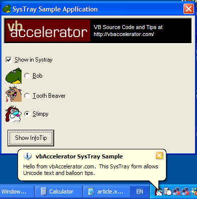

frmSysTray (3K)
frmSysTray (3K)
 SysTray Demonstration Project (27K)
SysTray Demonstration Project (27K)
 3 Mar 2003
3 Mar 2003
Added support for Balloon Info tips (Windows ME or 2000 and above required).
Added Unicode support (Windows NT required).

Add Your App to the Systray the Easy Way
This form class encapsulates all the SysTray functionality you'll need!
This sample application presents a small form which you can drop into your project to get immediate SysTray support. A lot of the source code I've seen for VB SysTray interfaces has used an OCX or DLL and subclassed for a SysTray message, however, it turns out you don't need to do this, because you can specify what message Windows will use to notify you of events in the tray. As a consequence, you just need to choose a message that corresponds to a Visual Basic event - in this case the sample code uses the WM_MOUSEMOVE message. This fires a mouse move event on the Visual Basic form, with the x parameter set to the corresponding notification flag.
To avoid any confusion with actual MouseMove events due to the user moving the mouse over the form acting as the SysTray interface, the form is set to be invisible. Since the form can act as a class, it is easy to provide it with methods to set the menu options to show, what icon will be shown in the System Tray and also what tool tip to show in the SysTray. I've also provided events which are fired whenever there is a Mouse Down, Mouse Up or Double Click on your SysTray icon, and a method to show the menu created in the form (which raises a MenuClick event when a menu is selected).
How To Use It
Here is all the code you need in a project which has frmSysTray included:
Private WithEvents m_frmSysTray As frmSysTray
Private Sub Form_Load()
Set m_frmSysTray = New frmSysTray
With m_frmSysTray
.AddMenuItem "&Open SysTray Sample", "open", True
.AddMenuItem "-"
.AddMenuItem "&Close", "close"
.ToolTip = "SysTray Sample!"
.IconHandle = Me.Icon.Handle
End With
End Sub
Private Sub Form_QueryUnload(Cancel As Integer, UnloadMode As Integer)
Unload m_frmSysTray
Set m_frmSysTray = Nothing
End Sub
Private Sub m_frmSysTray_MenuClick(ByVal lIndex As Long, ByVal sKey As String)
Select Case sKey
Case "open"
Me.Show
Me.ZOrder
Case "close"
Unload Me
End Select
End Sub
Private Sub m_frmSysTray_SysTrayDoubleClick(ByVal eButton As MouseButtonConstants)
Me.Show
Me.ZOrder
End Sub
Private Sub m_frmSysTray_SysTrayMouseDown(ByVal eButton As MouseButtonConstants)
If (eButton = vbRightButton) Then
m_frmSysTray.ShowMenu
End If
End Sub
Showing Balloon Tips
If your application is running on a system with Shell version 5.00 or above (Windows Me and Windows 2000 are the minimum versions for this Shell version) then you can pop-up Balloon Tips to provide the user with information or warning messages. The balloon tips themselves are queued by the operating system, so if there is already one displayed then you need to wait until it is cleared by the user or the system decides to the tip out.
To display a balloon tip, call the ShowBalloonTip passing in the message to display and optionally the title of the tip, the icon to show (which also affects the overall appearance of the tip - for example, a warning tip shows in a different colour to an information tip) and the timeout to use. The SysTray form has these events to notify what has happened:
- BalloonShow - Raised when your Balloon tip is shown.
- BalloonHide - Raised if the Balloon tip is hidden for a reason other than the user clicking it or it timing out.
- BalloonClick - Raised if the user clicks on the Balloon Tip itself. This indicates acceptance of the information in the tip.
- BalloonTimeOut - Raised if the balloon tip times out. Note that this is also raised on XP systems if the user clicks the Close button for the tip.